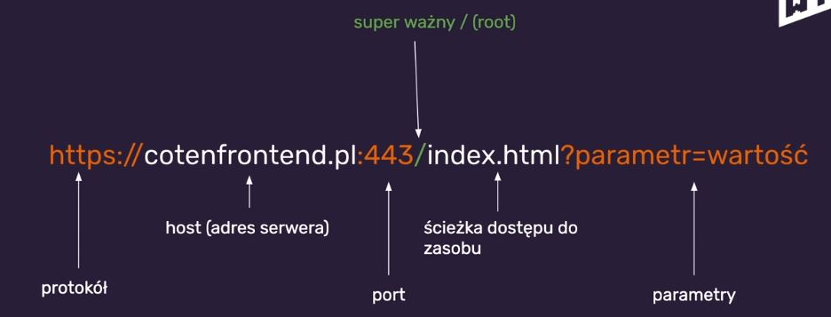
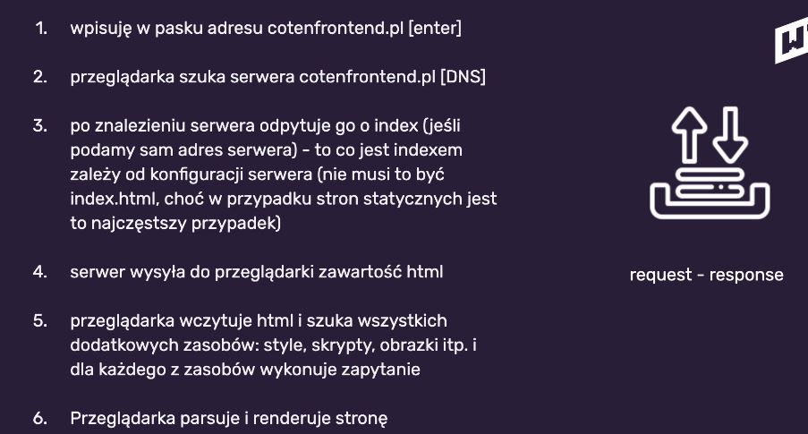

Notatki - przeglądarka i internet
HTTP = Hypertext Transfer Protocol
Lekcja:
W03E05 Jak działa Internet i przeglądarka
-> HTTP to protokół, który obsługuje strony internetowe i ich zawartość (służy do transportowania hmtla oraz wszystkich innych danych, które są widoczne na stronie internetowej w przeglądarce)
-> Obecnie coraz cześciej w użytku jest HTTP/2 (HTTP version 2)
-> HTTP/2 przyspiesza internet, ponieważ pozwala na wykonywanie równoległych połączeń i nie blokuje serwera
HTTPS = Hypertext Transfer Protocol Secure
Lekcja:
W03E05 Jak działa Internet i przeglądarka
-> HTTPS to także protokół do transportowania danych
-> Różnica między HTTP a HTTPS jest taka, że HTTPS jest szyfrowany (bezpieczny)
-> Rekomendacją Maćka Korsana jest aby korzystać tylko z HTTPS
-> Kiedy do transportu danych używany protokół HTTPS w pasku adresu pojawia się ikonka kłódki
URL = Uniform Resource Locator
Lekcja:
W03E05 Jak działa Internet i przeglądarka
-> Jest to adres, który wpisujemy w przeglądarkę (czyli adres strony na serwerze)
-> Adres URL składa się z następujących części

-> "Root" ("/") jest istotną częścią ścieżek do zasobów
-> "Root" ("/") mówi o tym, w którym miejscu przeglądarka powinna szukać zasobu
-> Tworząc stronę uruchamianą "z dysku" należy pomijać używanie "/" z przodu ścieżki (bo może to generować problemy)
Przepływ danych w przeglądarce
Lekcja:
W03E05 Jak działa Internet i przeglądarka
->Komunikacja przeglądarki z serwerem jest w modelu "request-response" (przeglądarka wysyła request to serwera, serwer zwraca żądane zasoby lub informuje o błędzie)

Kody odpowiedzi protokołu HTTP
Lekcja:
W03E05 Jak działa Internet i przeglądarka
-> Odpowiedzi serwera mają różne kody, co pozwala diagnozować ewentualne problemy
-> 100 - poczekaj, za chwilę dostaniesz odpowiedź
-> 200 - OK
-> 30x - szukasz w złym miejscu, ale przekieruję Cię w dobre, bo wiem gdzie
-> 404 - nie mam tego, czego potrzebujesz
-> 500 - błąd wewnętrzny serwera